건설재료시험산업기사 (2019-03-03 기출문제)
1과목: 콘크리트공학
1. 해양 콘크리트에 대한 설명 중 틀린 것은?
- 시멘트는 해수의 작용에 내구적인 고로 슬래그 시멘트 플라이 애시 시멘트 등의 혼합시멘트가 좋다.
- 해수는 알칼리골재반응의 반응성을 촉진하는 경우가 있으므로 충분히 검토하여야 한다.
- 콘크리트가 충분히 경화되기 전에 직접 해수에 닿지 않도록 보호해야 한다.
- 해양 구조물은 한 번에 타설하기 어려운 조건이므로 충분한 시공이음부를 두는 것이 좋다.
(정답률: 63%)

2. 다른 콘크리트와 비교할 때, 매스 콘크리트의 시공 시 가장 문제가 되는 현상은?
- 온도균열의 발생
- 건조수축의 발생
- 크리프변형의 증가
- 급속냉각현상
(정답률: 64%)
3. 콘크리트 압축강도의 표준편차를 알지못할 때, 콘크리트의 설계기준 압축강도가 35MPa이라면 배합강도는?
- 38.5MPa
- 42MPa
- 43.5MPa
- 45MPa
(정답률: 73%)
4. 내부진동기를 사용한 콘크리트 다짐작업에 대한 설명으로 틀린 것은?
- 내부진동기는 콘크리트를 횡방향으로 이동시킬 목적으로 사용하지 않아야 한다.
- 1개소 당 진동시간은 다짐할 때 시멘트 풀이 표면 상부로 약간 부상하기까지가 적절하다.
- 진동 다지기를 할 때에는 내부진동기를 하층의 콘크리트 속으로 0.1m 정도 찔러 넣는다.
- 내부진동기는 진동효율을 좋게 하기 위하여 약간 경사지게 찔러 넣으며, 그 간격은 1.0m 정도를 표준으로 한다.
(정답률: 70%)
5. 블리딩을 작게 하기 위한 방법으로 가장 옳지 않은 것은?
- 분말도가 높은 시멘트를 사용한다.
- 응결촉진제 등을 사용하여 수화속도를 높인다.
- 소요 워커빌리티 범위 내에서 단위수량을 줄인다.
- 타설 속도를 빠르게 하고 1회의 타설 높이를 높게 한다.
(정답률: 57%)
6. 배합강도를 결정하기 위한 압축강도의 시험 횟수가 29회 이하이고 15회 이상인 경우는 압축강도의 표준편차에 보정계수를 곱하여야 하는데, 시험 횟수가 20회인 경우의 보정계수는?
- 1.16
- 1.13
- 1.08
- 1.03
(정답률: 56%)
7. 서중 콘크리트에 대한 아래에 설명에서 ()안에 들어갈 알맞은 수치는?
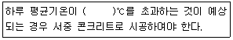
- 25
- 30
- 35
- 40
(정답률: 62%)
8. 그리스트레스트 콘크리트에서 프리스트레싱할 때의 콘크리트 강도에 대한 아래의 설명에서 ()안에 들어갈 알맞은 수치는?
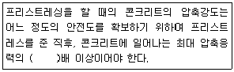
- 1.5
- 1.7
- 2
- 2.3
(정답률: 80%)
9. 프리스트레스트 콘크리트의 그라우트 시공에 대한 설명으로 틀린 것은?
- 그라우트 시공은 프리스트레싱이 끝난 후 최대 10일 이내에는 실시하여야 한다.
- PS 강재를 부착시키는 포스트텐션 방식의 경우에는 그라우트에 의한 긴장재의 녹막이를 실시하여야 한다.
- 그라우트 펌프는 그라우트를 천천히 그리고 공기가 혼입되지 않게 주입할 수 있는 것이어야 한다.
- 주입 작업 중에는 애지테이터 등에 의하여 주입이 끝날 때까지 천천히 휘저어야 한다.
(정답률: 61%)
10. 콘크리트의 단위 잔골재량과 단위 굵은 골재량이 각각 700kg/m3과 1060kg/m3이며, 잔골재와 굵은 골재의 표건밀도가 각각 2.61g/cm3및 2.65g/cm3일 때 잔골재율(S/a)은?
- 35%
- 40%
- 45%
- 50%
(정답률: 56%)
11. 콘크리트의 균열보수공법과 관계가 먼 것은?
- 표면처리공법
- 주입공법
- 전기방식공법
- 충전공법
(정답률: 59%)
12. 섬유보강 콘크리트에서 사용되는 시멘트계 복합재료용 섬유로 가장 거리가 먼 것은?
- 강섬유
- 폴리프로필렌섬유
- 탄소섬유
- 면섬유
(정답률: 66%)
13. 콘크리트의 받아들이기 품질검사에 대한 설명으로 틀린 것은?
- 콘크리트 받아들이기 품질검사는 타설을 완료한 후 즉시 실시하여야 한다.
- 바다 잔골재를 사용할 경우 염소이온량에 대한 검사는 1일에 2회 실시한다.
- 워커빌리티의 검사는 굵은 골재 최대 치수 및 슬럼프가 설정치를 만족하는지의 여부를 확인함과 동시에 재료 분리 저항성을 외관 관찰에 의해 확인하여야 한다.
- 강도검사는 콘크리트의 배합검사를 실시하는 것을 표준으로 한다.
(정답률: 55%)
14. 강도 시험용 공시체를 이용하여 쪼갬인장강도 시험을 실시하였더니 212kN의 하중에서 파괴되었다면 쪼갬인장강도는? (단, 공시체의 규격은 ø150mm×300mm이다.)
- 1.0MPa
- 2.0MPa
- 3.0MPa
- 4.0MPa
(정답률: 52%)
15. 콘크리트의 압축강도 시험에 관한 설명으로 틀린 것은?
- 공시체의 높이(h)와 지름(d)의 비(h/d)가 작을수록 큰 강도를 나타낸다.
- 하중을 가하는 속도가 빠를수록 큰 강도를 나타낸다.
- 시험 직전에 건조시켜 시험을 한 경우가 습윤 상태 그대로 시험하였을 때보다 작은 강도를 나타낸다.
- 공시체의 높이(h)와 지름(d)의 비(h/d)가 같은 경우, 지름이 클수록 작은 강도를 나타낸다.
(정답률: 57%)
16. 고강도 콘크리트의 배합에 대한 설명으로 틀린 것은?
- 잔골재율은 소요의 워커빌리티를 얻을 수 있는 범위 내에서 가능한 작게 하여야 한다.
- 혼화재로서 공기연행제를 사용하는 것을 원칙으로 한다.
- 슬럼프는 작업이 기능한 범위 내에서 되도록 작게 한다.
- 단위수량은 소요의 워커빌리티를 얻을 수 있는 범위 내에서 가능한 작게 하여야 한다.
(정답률: 72%)
17. 콘크리트 재료의 계량에 대한 설명으로 틀린 것은?
- 계량은 현장 배합에 의해 실시하는 것으로 한다.
- 혼화재의 경우 계량허용오차가 ±3%이다.
- 각 재료는 1배치씩 질량으로 계량하여야 하나, 물과 혼화재 용액은 용적으로 계량해도 좋다.
- 혼화제를 녹이는 데 사용하는 물은 단위 수량의 일부로 보아야 한다.
(정답률: 66%)
18. 콘크리트에 양생을 실시하는 이유로 볼 수 없는 것은?
- 시멘트의 수화반응 억제
- 양호한 강도의 발현
- 초기균열의 발생 억제
- 외부 충격으로부터 보호
(정답률: 51%)
19. 외기온도가 25℃일 때 하층 콘크리트 비비기 시작에서부터 하층 콘크리트 타설 완료한 후, 상층 콘크리트가 타설되기까지 시간(허용 이어치기 시간간격)의 표준은?
- 1시간
- 1.5시간
- 2시간
- 2.5시간
(정답률: 44%)
20. 슬럼프시험에서는 3개 층으로 나누어 슬럼프 콘에 시료를 채우고 다짐을 하는데 이 때 각 층마다 필요한 다짐 횟수는?
- 10회
- 15회
- 20회
- 25회
(정답률: 75%)
2과목: 건설재료 및 시험
21. 암석 특유의 천연적으로 갈라진 금을 무엇이라 하는가?
- 돌눈
- 석리
- 벽개
- 절리
(정답률: 74%)
22. 잔골재 A의 조립률이 3.2, 잔골재 B의 조립률이 2.2인 2가지 골재로 조립률이 2.8되는 잔골재 C를 만들고자 할 대 잔골재 A와 B를 어느 정도의 중량비로 합성하여야 하는가? (단, A:B의 중량비)
- 30%:70%
- 40%:60%
- 50%:50%
- 60%:40%
(정답률: 51%)
23. 역청재료의 신도 시험에서 저온에서 시험할 때 적용하는 온도는?
- 0℃
- 4℃
- 8℃
- 16℃
(정답률: 72%)
24. 시멘트의 응결에 대한 설명으로 틀린 것은?
- 온도가 낮을수록 응결은 빨라진다.
- 습도가 낮을수록 응결은 빨라진다.
- 분말도가 높을수록 응결은 빨라진다.
- 풍화된 시멘트는 일반적으로 응결이 지연된다.
(정답률: 72%)
25. 시멘트의 비표면적 시험에 관한 설명으로 틀린 것은?
- 블레인 공기 투과 장치를 사용하여 시험할 수 있다.
- 시멘트의 분말도를 알아보는 시험이다.
- 시멘트 내의 공기량을 측정하는 시험이다.
- 표준체에 의한 방법으로도 시험할 수 있다.
(정답률: 53%)
26. 플라이 애시에 대한 설명으로 옳은 것은?
- 콘크리트에 혼합하면 워커빌리티가 좋아진다.
- 규산백토, 화산재 등이 있고 천연적인것과 인공적인 것이 있다.
- 화학적 성분이 시멘트와 거의 같으므로 시멘트의 한 종류라고 볼 수 있다.
- 고로에서 나오는 광재를 공기 중에서 냉각시켜 잘게 분쇄하여 분말로 만든 것이다.
(정답률: 46%)
27. 다음 암석 중 압축강도가 가장 큰 것은?
- 화강암
- 점판암
- 응회암
- 사암
(정답률: 87%)
28. 굵은 골재의 체가름 시험 결과 각 체의 누적잔류량이 아래의 표와 같을 때 조립률은?
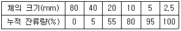
- 3.35
- 5.58
- 7.35
- 7.58
(정답률: 47%)
29. 재료가 하중을 받아 파괴될 때까지의 에너지 흡수 능력으로, 높은 응력에 견디며 큰 변형을 나타내는 성질을 무엇이라 하는가?
- 강성
- 탄성
- 수축
- 인성
(정답률: 44%)
30. 골재 안정성 시험에 사용하는 시험용 용액은?
- 질산 용액
- 황산나트륨 포화 용액
- 탄닌산 용액
- 질산나트륨 포화 용액
(정답률: 61%)
31. 아스팔트의 칩입도를 시험하는 목적은?
- 반죽질기(컨시스턴시)를 측정하기 위하여
- 연성을 조사하기 위하여
- 응결시간을 측정하기 위하여
- 연화점을 측정하기 위하여
(정답률: 68%)
32. 금속재료의 경도 측정방법이 아닌 것은?
- 앵글로 시험기에 의한 방법
- 브리넬 시험기에 의한 방법
- 쇼어 시험기에 의한 방법
- 비커스 시험기에 의한 방법
(정답률: 49%)
33. 합판의 특징에 대한 설명으로 틀린 것은?
- 동일한 원재로부터 많은 정목판과 나무 결무늬판이 제조된다.
- 팽창, 수축 등의 결점은 없으나 방향에 따라 강도의 차가 심하다.
- 폭이 넓은 판을 쉽게 얻을 수 있다.
- 목재의 완전 이용이 가능하다.
(정답률: 59%)
34. AE제 사용의 목적으로 가장 적당한 것은?
- 압축강도의 증가
- 슬럼프의 감소
- 동결융해 저항성의 증가
- 해수에 대한 저항성 감소
(정답률: 73%)
35. 골재에 대한 시험결과가 아래 표와 같을 때 이 골재의 공극률(%)은?(오류 신고가 접수된 문제입니다. 반드시 정답과 해설을 확인하시기 바랍니다.)
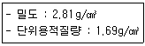
- 33.7%
- 39.9%
- 60.1%
- 66.3%
(정답률: 54%)
36. 다음 혼화재료 중 사용량이 5% 이상이어서 콘크리트의 배합설계에 고려해야 하는 것은?
- AE감수제
- 유동화제
- 급결제
- 플라이 애시
(정답률: 72%)
37. 그라우트(grout)용 혼화제로서 필요한 성질에 해당하지 않는 것은?
- 재료의 분리가 일어나지 않아야 한다.
- 블리딩 발생이 없어야 한다.
- 주입이 용이하여야 한다.
- 구라우트를 수축시키는 성질이 있어야 한다.
(정답률: 82%)
38. 다음 중 폭약으로 칼릿(carlit)을 사용할 수 없는 것은?
- 경질토사의 절토용
- 채석장에서 큰 돌의 채취용
- 용수가 있는 터널공사의 발파용
- 갱외(坑外)의 암설절취용
(정답률: 69%)
39. 다음 아스팔트 중 석유 아스팔트에 속하는 것은?
- 샌드 아스팔트
- 록 아스팔트
- 레이크 아스팔트
- 스트레이트 아스팔트
(정답률: 70%)
40. 다음 시멘트 중 혼합시멘트에 속하는 것은?
- 내화물용 알루미나 시멘트
- 포틀랜드 포졸란 시멘트
- 조강 포틀랜드 시멘트
- 초속경 시멘트
(정답률: 60%)
3과목: 건설시공학
41. 공사관리의 3대 요소에 포함되지 않는 것은?
- 공정관리
- 품질관리
- 원가관리
- 유지관리
(정답률: 55%)
42. 아래의 표에서 설명하고 있는 아스팔트 포장의 유지공법은?
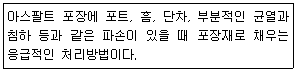
- 패칭
- 오버레이
- 재포장
- 서피스 리사이클링
(정답률: 72%)
43. 교대의 측장유동의 방지대책으로 틀린 것은?
- 교대 배면에 압성토를 한다.
- 뒷채움시 경량 성토재로 시공한다.
- 교대 전면에 지지 구조물을 설치한다.
- 교량의 상부를 접속슬래브로 연결한다.
(정답률: 34%)
44. 다음 그림과 같이 터파기를 할 때 A~B의 수평거리는?
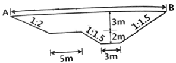
- 24.5m
- 25.5m
- 28.0m
- 30.5m
(정답률: 44%)
45. 현장타설 콘크리트 말뚝의 특징으로 옳지 않은 것은?
- 지지층의 깊이에 따라 말뚝길이의 조정이 가능하다.
- 선단부에 구근을 만들어 지지력을 크게 할 수 있다.
- 현장에서 직접 타설하므로 시공 중 및 시공 후 품질관리가 용이하다.
- 말뚝재료의 낭비가 없고 수송의 제한이 없다.
(정답률: 37%)
46. 다음 중 옹벽의 안정검토 항목에 포함되지 않는 것은?
- 활동에 대한 안정
- 전도에 대한 안정
- 지반 지지력에 대한 안정
- 수동토압에 대한 안정
(정답률: 64%)
47. 아래의 표에는 설명하는 콘크리트 교량가설공법은?
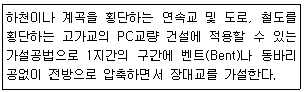
- FCM
- PSM
- FSM
- ILM
(정답률: 50%)
48. 콘크리트 포장과 비교할 때 아스팔트 포장의 특징으로 옳지 않은 것은?
- 유지보수 및 부분적 보수가 용이하다.
- 판구조이며 가용성 포장이다.
- 교통개발 시기를 단축시킬 수 있다.
- 중차량에 대한 내구성이 부족하다.
(정답률: 53%)
49. 흙막이 공사에서 어스앵커(Earth Anchor)공법에 대한 설명으로 옳지 않은 것은?
- 굴착면의 폭이 좁을 때 버팀보보다 유리하다.
- 작업공간이 넓게 확보된다.
- 정착지반이 약할 경우 앵커의 길이가 길어진다.
- 앵커가 인접대지를 침범하는 경우 민원이 발생될 수 있다.
(정답률: 44%)
50. 다음 중 현장 타설 콘크리트 말뚝의 종류가 아닌 것은?
- 프랜키 말뚝
- 배토 말뚝
- 페데스탈 말뚝
- 레이먼드 말뚝
(정답률: 51%)
51. 수로나 도로, 철도 기타 지상구조물의 지하에서 횡단하여 물의 통로를 만드는 지하구조로서 용수, 배수, 운하 등 성질이 다른 수로가 교차하여 합류시킬 수 없을 경우, 수로교로서는 안 될 경우, 또 다른 수로 혹은 노선과 교차할 경우에 사용하는 것은?
- 관암거
- 다공관거
- 함거
- 사이펀관거
(정답률: 69%)
52. 성토용 다짐기계 중 철륜 표면에 다수의 돌기를 붙여 접지면적을 작게 하여 접지압을 증가시킨 롤러로서 습지와 같은 연약 지반의 다짐에 적당한 것은?
- 탬핑 롤러
- 탠덤 롤러
- 머캐덤 롤러
- 타이어 롤러
(정답률: 53%)
53. 성토공법 중 공사 중에 압축이 적어 완성 후 침하기 크니깐 공사속도가 빨라 도로 및 철도의 낮은 성토에 많이 사용하는 공법은?
- 수평층 쌓기
- 전방층 쌓기
- 물다짐 쌓기
- 비계층 쌓기
(정답률: 53%)
54. 댐의 위치 선정조건에 대한 설명으로 틀린 것은?
- 댐 상류는 집수분지를 이루고 있는 곳
- 댐 기초 바닥부는 양질의 두꺼운 암층인 곳
- 계곡 폭이 넓고, 양안이 낮으며 마주보고 있는 곳
- 다량의 저수가 가능하고 집수면적이 큰 곳
(정답률: 53%)
55. 40000m3의 성토구간이 있다. 토사를 운반하여 성토하고자 할 때 필요한 토량을 흐트러진 토량으로 구하면? (단, L=1.25, C=0.8이다.)
- 50000m3
- 57500m3
- 62500m3
- 67500m3
(정답률: 48%)
56. 토공 작업에서 불도저로 토량 138240m3를 60일 만에 끝내려고 할 때 불도저의 소요 대수는? (단, 불도저 1시간당 작업량 24m3/h, 1일 작업시간 8시간, 가동률 80%)
- 19대
- 15대
- 12대
- 10대
(정답률: 60%)
57. 수직갱에 물이 고여 있을 때 사용하면 편리한 발파 방법은?
- 번 컷
- 스윙 컷
- 노 컷
- 피라미드 컷
(정답률: 56%)
58. 아래의 표에서 설명하는 불도저의 종류는?
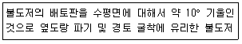
- 레이크도저
- 리퍼도저
- 습지도저
- 틸트도저
(정답률: 50%)
59. 뉴매틱 케이슨공법의 장점에 대한 설명으로 틀린 것은?
- 공정이 빠르고, 공사기간도 확실히 예정할 수 있다.
- 비교적 정확히 지지력 측정이 가능하다.
- 인접 지반 침하의 현상을 일으키지 않는다.
- 소규모의 공사나 깊이가 얕은 경우 경제적인 공법이다.
(정답률: 60%)
60. 터널에 인버트 아치(Invert arch)를 시공할 필요가 있는 경우는?
- 용수가 많을 때
- 경사가 클 때
- 지질이 나쁠 때
- 단면은 크게 굴착할 때
(정답률: 70%)
4과목: 토질 및 기초
61. Hazen이 제안한 균등계수가 5 이하인 균등한 모래의 투수계수(k)를 구할 수 있는 경험식으로 옳은 것은? (단, c는 상수이고 D10은 유효입경이다.)
- k=cD10(cm/s)
- k=cD210(cm/s)
- k=cD310(cm/s)
- k=cD410(cm/s)
(정답률: 64%)
62. 포화단위중량이 1.8t/m3인 모래지반이 있다. 이 포화 모래지반에 침투수압의 작용으로 모래가 분출하고 있다면 한계동수경사는?
- 0.8
- 1.0
- 1.8
- 2.0
(정답률: 38%)
63. 흙의 다짐시험에서 다짐 에너지를 증가시킬 때 일어나는 변화로 옳은 것은?
- 최적함수비와 최대건조밀도가 모두 증가한다.
- 최적함수비와 최대건조밀도가 모두 감소한다.
- 최적함수비는 증가하고 최대건조밀도는 감소한다.
- 최적함수비는 감소하고 최대건조밀도는 증가한다.
(정답률: 53%)
64. 진동이나 충격과 같은 동적외력의 작용으로 모래의 간극비가 감소하며 이로인하여 간극수압이 상승하여 흙의 전단강도가 급격히 소실되어 현탄액과 같은 상태로 되는 현상은?
- 액상화 현상
- 동상 현상
- 다일러턴시 현상
- 틱소트로피 현상
(정답률: 60%)
65. 유선망을 이용하여 구할 수 없는 것은?
- 간극수압
- 침투수량
- 동수경사
- 투수계수
(정답률: 56%)
66. 어떤 포화점토의 일축압축강도(qu)가 3.0kg/cm2이었다. 이 흙의 점착력(c)은?
- 3.0kg/cm2
- 2.5kg/cm2
- 2.0kg/cm2
- 1.5kg/cm2
(정답률: 56%)
67. 입구분포곡선에서 통과율 10%에 해당하는 입경(D10)이 0.0⑤mm이고, 통과율 60%에 해당하는 입경(D60)이 0.025mm일 때 균등계수(Cu)는?
- 1
- 3
- 5
- 7
(정답률: 52%)
68. 다음 중 말뚝의 정역학적 지지력공식은?
- Sandr 공식
- Terzaghi 공식
- Engineering News 공식
- Hiley 공식
(정답률: 64%)
69. 다음 그림과 같은 접지압 분포를 나타내는 조건으로 옳은 것은?
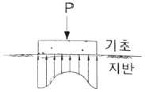
- 점토지반, 강성기초
- 점토지반, 연성기초
- 모래지반, 강성기초
- 모래지반, 연성기초
(정답률: 60%)
70. 다음 그림과 같은 높이가 10m인 옹벽이 점착력이 0인 건조한 모래를 지지하고 있다. 모래의 마찰각이 36°, 단위중량이 1.6t/m3일 때 전 주동토압은?
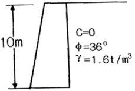
- 20.8t/m
- 24.3t/m
- 33.2t/m
- 39.5t/m
(정답률: 42%)
71. 연약점토지반(ø=0)의 단위중량이 1.6t/m3, 점착력이 2t/m2이다. 이 지반을 연직으로 2m 굴착하였을 때 연직사면의 안전율은?
- 1.5
- 2.0
- 2.5
- 3.0
(정답률: 44%)
72. 그림과 같은 모래지반에서 X-X면의 전단강도는? (단, ø=30°, c=0)
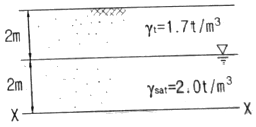
- 1.56t/m2
- 2.14t/m2
- 3.12t/m2
- 4.27t/m2
(정답률: 41%)
73. 점성토 지반에 사용하는 연약지반 개량 공법이 아닌 것은?
- Sand drain 공법
- 침투압 공법
- Vibro floatation 공법
- 생석회 말뚝 공법
(정답률: 65%)
74. 다음 중 동해가 가장 심하게 발생하는 토절은?
- 실트
- 점토
- 모래
- 콜로이드
(정답률: 70%)
75. 점토의 예민비(sensitivity ratio)는 다음 시험 중 어떤 방법으로 구하는가?
- 삼축압축시험
- 일축압축시험
- 직접전단시험
- 베인시험
(정답률: 61%)
76. 압밀계수가 0.5×10-2cm2/s이고, 일면 배수 상태의 5m 두께 점토층에서 90%압밀이 일어나는데 소요되는 시간은? (단, 90% 압밀도에서 시간계수(T)는 0.848)
- 2.12×107초
- 4.24×107초
- 6.36×107초
- 8.48×107초
(정답률: 40%)
77. 사질지반에 40cm×40cm 재하판으로 재하 시험한 결과 16t/m2의 극한지지력을 얻었다. 2m×2m의 기초를 설치하면 이론상 지지력은 얼마나 되겠는가?
- 16t/m2
- 32t/m2
- 40t/m2
- 80t/m2
(정답률: 45%)
78. 모래 치환법에 의한 흙의 밀도 시험에서 모래(표준사)는 무엇을 구하기 위해 사용되는가?
- 흙의 중량
- 시험구멍의 부피
- 흙의 함수비
- 지반의 지지력
(정답률: 58%)
79. 아래는 불교란 흙 시료를 채취하기 위한 샘플러 선단의 그림이다. 면적비(Ar)를 구하는 식으로 옳은 것은?
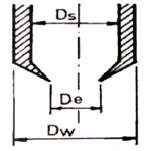
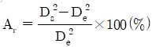
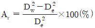
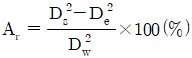
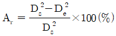
(정답률: 55%)
80. 간극비(e) 0.65, 함수비(w) 20.5%, 비중(Gs) 2.69인 사질점토의 습윤단위중량(γt)는?
- 1.02g/cm3
- 1.35g/cm3
- 1.63g/cm3
- 1.96g/cm3
(정답률: 20%)
해양 구조물은 한 번에 타설하기 어려운 조건이므로 충분한 시공이음부를 두는 것이 좋다는 이유는, 해양에서의 시공은 기상 조건, 파도, 해류 등의 영향을 받기 때문에 일정한 조건에서 콘크리트를 타설하기 어렵기 때문이다. 따라서 충분한 시공이음부를 두어 각 부분이 서로 연결되도록 하여 전체 구조물의 강도와 내구성을 높이는 것이 중요하다.